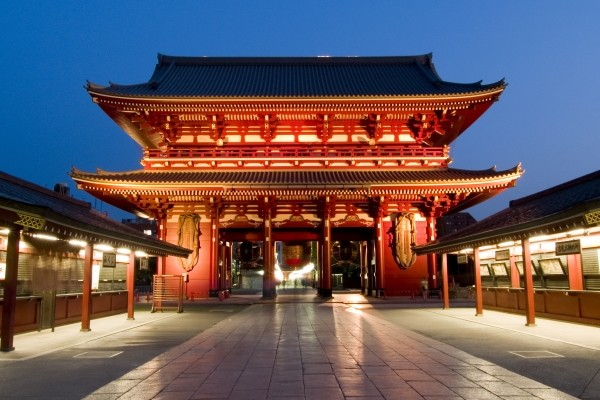
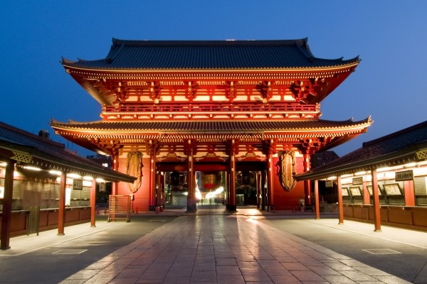

VERT ORANGÉ


 

DESCRIPTION
Guide voyage Tokyo, Kyoto et environs 2017 Trop loin, trop cher, trop inaccessible : longtemps, le Japon a été assimilé à une sorte de planète Mars, et pourtant, c’est une étoile fascinante. Avec un taux de change devenu favorable aux Européens, l’archipel nippon est désormais plus accessible. Les mégapoles d’abord : Tokyo, la plus grande ville du monde, un univers urbain électrique, trépidant, étincelant. Kyoto, l’ancienne capitale impériale, ville des arts et des geishas, du thé et de l’ikebana. Nara, le berceau artistique et religieux, mais aussi Nikko haut perchée dans ses montagnes, Kamakura au bord de la mer, Hakone la porte du mont Fuji, symbole majestueux du Japon, à voir au printemps au moment où les cerisiers fleurissent.
DERNIERES DESTINATIONS